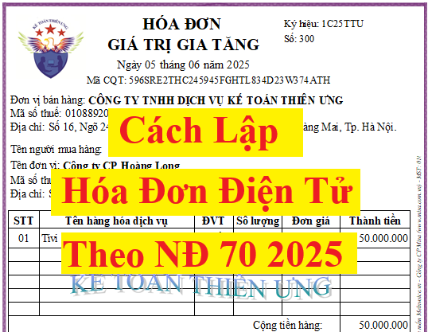

Hướng dẫn lập hóa đơn điện tử mới nhất năm 2025 tại Thông tư 32/2025/TT-BTC và Nghị định 70/2025/NĐ-CP quy định về hóa đơn, chứng từ.
Các văn bản pháp luật quy định về hóa đơn điện tử mới nhất hiện nay:
+ Nghị định 123/2020/NĐ-CP quy định về hoá đơn, chứng từ (Ban hành ngày 19/10/2020, có hiệu lực từ ngày 01/7/2022)
+ Thông tư 32/2025/TT-BTC (Thay thế Thông tư 78/2021/TT-BTC) (Ban hành ngày 31/05/2025, có hiệu lực kể từ ngày 01/06/2025)
+ Nghị định 70/2025/NĐ-CP sửa đổi Nghị định 123/2020/NĐ-CP (Ban hành ngày 20/03/2025, có hiệu lực thi hành từ ngày 01/6/2025)
1. Phải lập hóa đơn trong những trường hợp nào?
Điểm a Khoản 3 Điều 1 Nghị định 70/2025/NĐ-CP Sửa đổi, bổ sung khoản 1 Điều 4 của Nghị định số 123/2020/NĐ-CP thì:
Khi bán hàng hóa, cung cấp dịch vụ, người bán phải lập hóa đơn để giao cho người mua, bao gồm cả các trường hợp:
+ Hàng hóa, dịch vụ dùng để khuyến mại, quảng cáo, hàng mẫu;
+ Hàng hóa, dịch vụ dùng để cho, biếu, tặng, trao đổi, trả thay lương cho người lao động và tiêu dùng nội bộ (trừ hàng hóa luân chuyển nội bộ để tiếp tục quá trình sản xuất);
+ Xuất hàng hóa dưới các hình thức cho vay, cho mượn hoặc hoàn trả hàng hóa)
+ Hàng hóa, dịch vụ dùng để khuyến mại, quảng cáo, hàng mẫu;
+ Hàng hóa, dịch vụ dùng để cho, biếu, tặng, trao đổi, trả thay lương cho người lao động và tiêu dùng nội bộ (trừ hàng hóa luân chuyển nội bộ để tiếp tục quá trình sản xuất);
+ Xuất hàng hóa dưới các hình thức cho vay, cho mượn hoặc hoàn trả hàng hóa)
+ và các trường hợp lập hóa đơn theo quy định tại Điều 19 Nghị định 123/2020/NĐ-CP đã được sửa đổi bổ sung tại Khoản 13 Điều 1 Nghị định 70/2025/NĐ-CP có hiệu lực từ ngày 01/06/2025 (Chi tiết các bạn xem tại đây: Thay thế, điều chỉnh hóa đơn điện tử theo Nghị định 70 2025 )
2. Thời điểm lập hóa đơn
Thực hiện theo quy định tại điều 9 của Nghị định 123/2020/NĐ-CP (Đã được bổ sung bởi Khoản 6 Điều 1 Nghị định 70/2025/NĐ-CP) về Thời điểm lập hóa đơn như sau:
1. Thời điểm lập hóa đơn đối với bán hàng hóa (bao gồm cả bán, chuyển nhượng tài sản công và bán hàng dự trữ quốc gia) là thời điểm chuyển giao quyền sở hữu hoặc quyền sử dụng hàng hóa cho người mua, không phân biệt đã thu được tiền hay chưa thu được tiền.
Đối với xuất khẩu hàng hóa (bao gồm cả gia công xuất khẩu), thời điểm lập hóa đơn thương mại điện tử, hóa đơn giá trị gia tăng điện tử hoặc hóa đơn bán hàng điện tử do người bán tự xác định nhưng chậm nhất không quá ngày làm việc tiếp theo kể từ ngày hàng hóa được thông quan theo quy định pháp luật về hải quan.
2. Thời điểm lập hóa đơn đối với cung cấp dịch vụ là thời điểm hoàn thành việc cung cấp dịch vụ (bao gồm cả cung cấp dịch vụ cho tổ chức, cá nhân nước ngoài) không phân biệt đã thu được tiền hay chưa thu được tiền. Trường hợp người cung cấp dịch vụ có thu tiền trước hoặc trong khi cung cấp dịch vụ thì thời điểm lập hóa đơn là thời điểm thu tiền (không bao gồm trường hợp thu tiền đặt cọc hoặc tạm ứng để đảm bảo thực hiện hợp đồng cung cấp các dịch vụ: Kế toán, kiểm toán, tư vấn tài chính, thuế; thẩm định giá; khảo sát, thiết kế kỹ thuật; tư vấn giám sát; lập dự án đầu tư xây dựng).
3. Trường hợp giao hàng nhiều lần hoặc bàn giao từng hạng mục, công đoạn dịch vụ thì mỗi lần giao hàng hoặc bàn giao đều phải lập hóa đơn cho khối lượng, giá trị hàng hóa, dịch vụ được giao tương ứng.
4. Thời điểm lập hóa đơn đối với một số trường hợp cụ thể như sau:
a) Đối với các trường hợp bán hàng hóa, cung cấp dịch vụ với số lượng lớn, phát sinh thường xuyên, cần có thời gian đối soát số liệu giữa doanh nghiệp bán hàng hóa, cung cấp dịch vụ và khách hàng, đối tác gồm: Trường hợp cung cấp dịch vụ hỗ trợ trực tiếp cho vận tải hàng không, cung ứng nhiên liệu hàng không cho các hãng hàng không, hoạt động cung cấp điện (trừ đối tượng quy định tại điểm h khoản này), cung cấp dịch vụ hỗ trợ vận tải đường sắt, nước, dịch vụ truyền hình, dịch vụ quảng cáo truyền hình, dịch vụ thương mại điện tử, dịch vụ bưu chính và chuyển phát (bao gồm cả dịch vụ đại lý, dịch vụ thu hộ, chi hộ), dịch vụ viễn thông (bao gồm cả dịch vụ viễn thông giá trị gia tăng), dịch vụ logistic, dịch vụ công nghệ thông tin (trừ trường hợp quy định tại điểm b khoản này) được bán theo kỳ nhất định, dịch vụ ngân hàng (trừ hoạt động cho vay), chuyển tiền quốc tế, dịch vụ chứng khoán, xổ số điện toán, thu phí sử dụng đường bộ giữa nhà đầu tư và nhà cung cấp dịch vụ thu phí và các trường hợp khác theo hướng dẫn của Bộ trưởng Bộ Tài chính, thời điểm lập hóa đơn là thời điểm hoàn thành việc đối soát dữ liệu giữa các bên nhưng chậm nhất không quá ngày 07 của tháng sau tháng phát sinh việc cung cấp dịch vụ hoặc không quá 07 ngày kể từ ngày kết thúc kỳ quy ước. Kỳ quy ước để làm căn cứ tính lượng hàng hóa, dịch vụ cung cấp căn cứ thỏa thuận giữa đơn vị bán hàng hóa, cung cấp dịch vụ với người mua.
b) Đối với dịch vụ viễn thông (bao gồm cả dịch vụ viễn thông giá trị gia tăng), dịch vụ công nghệ thông tin (bao gồm dịch vụ trung gian thanh toán sử dụng trên nền tảng viễn thông, công nghệ thông tin) phải thực hiện đối soát dữ liệu kết nối giữa các cơ sở kinh doanh dịch vụ, thời điểm lập hóa đơn là thời điểm hoàn thành việc đối soát dữ liệu về cước dịch vụ theo hợp đồng kinh tế giữa các cơ sở kinh doanh dịch vụ nhưng chậm nhất không quá 2 tháng kể từ tháng phát sinh cước dịch vụ kết nối.
Trường hợp cung cấp dịch vụ viễn thông (bao gồm cả dịch vụ viễn thông giá trị gia tăng) thông qua bán thẻ trả trước, thu cước phí hòa mạng khi khách hàng đăng ký sử dụng dịch vụ mà khách hàng không yêu cầu xuất hóa đơn GTGT hoặc không cung cấp tên, địa chỉ, mã số thuế thì cuối mỗi ngày hoặc định kỳ trong tháng, cơ sở kinh doanh dịch vụ lập chung một hóa đơn GTGT ghi nhận tổng doanh thu phát sinh theo từng dịch vụ người mua không lấy hóa đơn hoặc không cung cấp tên, địa chỉ, mã số thuế.
c) Đối với hoạt động xây dựng, lắp đặt, thời điểm lập hóa đơn là thời điểm nghiệm thu, bàn giao công trình, hạng mục công trình, khối lượng xây dựng, lắp đặt hoàn thành, không phân biệt đã thu được tiền hay chưa thu được tiền.
d) Đối với tổ chức kinh doanh bất động sản, xây dựng cơ sở hạ tầng, xây dựng nhà để bán, chuyển nhượng:
d.1) Trường hợp chưa chuyển giao quyền sở hữu, quyền sử dụng: Có thực hiện thu tiền theo tiến độ thực hiện dự án hoặc tiến độ thu tiền ghi trong hợp đồng thì thời điểm lập hóa đơn là ngày thu tiền hoặc theo thỏa thuận thanh toán trong hợp đồng.
d.2) Trường hợp đã chuyển giao quyền sở hữu, quyền sử dụng: Thời điểm lập hóa đơn thực hiện theo quy định tại khoản 1 Điều này.
đ) Thời điểm lập hóa đơn đối với các trường hợp tổ chức kinh doanh mua dịch vụ vận tải hàng không xuất qua website và hệ thống thương mại điện tử được lập theo thông lệ quốc tế chậm nhất không quá 05 ngày kế tiếp kể từ ngày chứng từ dich vụ vận tải hàng không xuất ra trên hệ thống website và hệ thống thương mại điện tử.
e) Đối với hoạt động tìm kiếm thăm dò, khai thác và chế biến dầu thô: Thời điểm lập hóa đơn bán dầu thô, condensate, các sản phẩm được chế biến từ dầu thô (bao gồm cả hoạt động bao tiêu sản phẩm theo cam kết của Chính phủ) là thời điểm bên mua và bên bán xác định được giá bán chính thức, không phân biệt đã thu được tiền hay chưa thu được tiền.
Đối với hoạt động bán khí thiên nhiên, khí đồng hành, khí than được chuyển bằng đường ống dẫn khí đến người mua, thời điểm lập hóa đơn là thời điểm bên mua, bên bán xác định khối lượng khí giao của tháng nhưng chậm nhất là ngày cuối cùng của thời hạn kê khai, nộp thuế đối với tháng phát sinh nghĩa vụ thuế theo quy định pháp luật về thuế.
Trường hợp thỏa thuận bảo lãnh và cam kết của Chính phủ có quy định khác về thời điểm lập hóa đơn thì thực hiện theo quy định tại thỏa thuận bảo lãnh và cam kết của Chính phủ.
g) Điểm này đã bị Bãi bỏ
h) Đối với hoạt động bán điện của các công ty phát điện trên thị trường điện thì thời điểm lập hóa đơn điện tử được xác định căn cứ thời điểm về đối soát số liệu thanh toán giữa đơn vị vận hành hệ thống điện và thị trường điện, đơn vị phát điện và đơn vị mua điện theo quy định của Bộ Công Thương hoặc hợp đồng mua bán điện đã được Bộ Công Thương hướng dẫn, phê duyệt nhưng chậm nhất là ngày cuối cùng của thời hạn kê khai, nộp thuế đối với tháng phát sinh nghĩa vụ thuế theo quy định pháp luật về thuế. Riêng hoạt động bán điện của các công ty phát điện có cam kết bảo lãnh của Chính phủ về thời điểm thanh toán thì thời điểm lập hóa đơn điện tử căn cứ theo bảo lãnh của Chính phủ, hướng dẫn và phê duyệt của Bộ Công Thương và các hợp đồng mua bán điện đã được ký kết giữa bên mua điện và bên bán điện.
i) Thời điểm lập hóa đơn điện tử đối với trường hợp bán xăng dầu tại các cửa hàng bán lẻ cho khách hàng là thời điểm kết thúc việc bán xăng dầu theo từng lần bán. Người bán phải đảm bảo lưu trữ đầy đủ hóa đơn điện tử đối với trường hợp bán xăng dầu cho khách hàng là cá nhân không kinh doanh, cá nhân kinh doanh và đảm bảo có thể tra cứu khi cơ quan có thẩm quyền yêu cầu.
k) Đối với trường hợp cung cấp dịch vụ vận tải hàng không, dịch vụ bảo hiểm qua đại lý, thời điểm lập hóa đơn là thời điểm hoàn thành việc đối soát dữ liệu giữa các bên nhưng chậm nhất không quá ngày 10 của tháng sau tháng phát sinh.
l) Thời điểm lập hóa đơn đối với hoạt động cho vay được xác định theo kỳ hạn thu lãi tại hợp đồng tín dụng giữa tổ chức tín dụng và khách hàng đi vay, trừ trường hợp đến kỳ hạn thu lãi không thu được và tổ chức tín dụng theo dõi ngoại bảng theo quy định pháp luật về tín dụng thì thời điểm lập hóa đơn là thời điểm thu được tiền lãi vay của khách hàng. Trường hợp trả lãi trước hạn theo hợp đồng tín dụng thì thời điểm lập hóa đơn là thời điểm thu lãi trước hạn.
Đối với hoạt động đại lý đổi ngoại tệ, hoạt động cung ứng dịch vụ nhận và chi, trả ngoại tệ của tổ chức kinh tế của tổ chức tín dụng, thời điểm lập hóa đơn là thời điểm đổi ngoại tệ, thời điểm hoàn thành dịch vụ nhận và chi trả ngoại tệ.
m) Đối với kinh doanh vận tải hành khách bằng xe taxi có sử dụng phần mềm tính tiền theo quy định của pháp luật: tại thời điểm kết thúc chuyến đi, doanh nghiệp, hợp tác xã kinh doanh vận tải hành khách bằng xe taxi có sử dụng phần mềm tính tiền thực hiện lập hóa đơn điện tử cho khách hàng đồng thời chuyển dữ liệu hóa đơn đến cơ quan thuế theo quy định.
n) Đối với cơ sở khám bệnh, chữa bệnh có sử dụng phần mềm quản lý khám chữa bệnh và quản lý viện phí, từng giao dịch khám, chữa bệnh và thực hiện các dịch vụ chụp, chiếu, xét nghiệm có in phiếu thu tiền (thu viện phí hoặc tiền khám, xét nghiệm) và có lưu trên hệ thống công nghệ thông tin, nếu khách hàng (người đến khám, chữa bệnh) không có nhu cầu lấy hóa đơn thì cuối ngày cơ sở khám bệnh, chữa bệnh căn cứ thông tin khám, chữa bệnh và thông tin từ phiếu thu tiền để tổng hợp lập hóa đơn điện tử cho các dịch vụ y tế thực hiện trong ngày, trường hợp khách hàng yêu cầu lập hóa đơn điện tử thì cơ sở khám bệnh, chữa bệnh lập hóa đơn điện tử giao cho khách hàng.
Cơ sở khám bệnh, chữa bệnh lập hóa đơn cho cơ quan bảo hiểm xã hội tại thời điểm được cơ quan bảo hiểm xã hội thanh, quyết toán chi phí khám chữa bệnh cho người có thẻ bảo hiểm y tế.
o) Đối với hoạt động thu phí dịch vụ sử dụng đường bộ theo hình thức điện tử không dừng ngày lập hóa đơn điện tử là ngày xe lưu thông qua trạm thu phí. Trường hợp khách hàng sử dụng dịch vụ thu phí đường bộ theo hình thức điện tử không dừng có một hoặc nhiều phương tiện cùng sử dụng dịch vụ nhiều lần trong tháng, đơn vị cung cấp dịch vụ có thể lập hóa đơn điện tử theo định kỳ, ngày lập hóa đơn điện tử chậm nhất là ngày cuối cùng của tháng phát sinh dịch vụ thu phí. Nội dung hóa đơn liệt kê chi tiết từng lượt xe lưu thông qua các trạm thu phí (bao gồm: thời gian xe qua trạm, giá phí sử dụng đường bộ của từng lượt xe).
p) Thời điểm lập hóa đơn của hoạt động kinh doanh bảo hiểm là thời điểm ghi nhận doanh thu bảo hiểm theo quy định của pháp luật về kinh doanh bảo hiểm.
q) Đối với hoạt động kinh doanh vé xổ số truyền thống, xổ số biết kết quả ngay (vé xổ số) theo hình thức bán vé số in sẵn đủ mệnh giá cho khách hàng thì sau khi thu hồi vé xổ số không tiêu thụ hết và chậm nhất là trước khi mở thưởng của kỳ tiếp theo, doanh nghiệp kinh doanh xổ số lập 01 hóa đơn giá trị gia tăng điện tử có mã của cơ quan thuế cho từng đại lý là tổ chức, cá nhân cho vé xổ số được bán trong kỳ gửi cơ quan thuế cấp mã cho hóa đơn.
r) Đối với hoạt động kinh doanh casino và trò chơi điện tử có thưởng, thời điểm lập hóa đơn điện tử chậm nhất là 01 ngày kể từ thời điểm kết thúc ngày xác định doanh thu, đồng thời doanh nghiệp kinh doanh casino và trò chơi điện tử có thưởng chuyển dữ liệu ghi nhận số tiền thu được (do đổi đồng tiền quy ước cho người chơi tại quầy, tại bàn chơi và số tiền thu tại máy trò chơi điện tử có thưởng) trừ đi số tiền đổi trả cho người chơi (do người chơi trúng thưởng hoặc người chơi không sử dụng hết) theo Mẫu 01/TH-DT Phụ lục IA ban hành kèm theo Nghị định này đến cơ quan thuế cùng thời điểm chuyển dữ liệu hóa đơn điện tử. Ngày xác định doanh thu là khoảng thời gian từ 0 giờ 00 phút đến 23 giờ 59 phút cùng ngày.
3.1. Một vài các thông tin có sẵn hoặc tự động lấy thông tin trên hóa đơn điện tử:
* Mã của cơ quan thuế đối với hóa đơn điện tử có mã của cơ quan thuế
3. Cách ghi từng chỉ tiêu, nội dung trên hóa đơn điện tử như sau:
3.1. Một vài các thông tin có sẵn hoặc tự động lấy thông tin trên hóa đơn điện tử:
* Ký hiệu mẫu số, ký hiệu hóa đơn, tên liên hóa đơn (Theo điều 4 của Thông tư 32/2025/TT-BTC)
a) Ký hiệu mẫu số hóa đơn điện tử là ký tự có một chữ số tự nhiên là các số tự nhiên 1, 2, 3, 4, 5, 6, 7, 8, 9 để phản ánh loại hóa đơn điện tử như sau:
- Số 1: Phản ánh loại hóa đơn điện tử giá trị gia tăng;
- Số 2: Phản ánh loại hóa đơn điện tử bán hàng;
- Số 3: Phản ánh loại hóa đơn điện tử bán tài sản công;
- Số 4: Phản ánh loại hóa đơn điện tử bán hàng dự trữ quốc gia;
- Số 5: Phản ánh các loại hóa đơn điện tử khác là tem điện tử, vé điện tử, thẻ điện tử, phiếu thu điện tử hoặc các chứng từ điện tử có tên gọi khác nhưng có nội dung của hóa đơn điện tử theo quy định tại Nghị định số 123/2020/NĐ-CP;
- Số 6: Phản ánh các chứng từ điện tử được sử dụng và quản lý như hóa đơn gồm phiếu xuất kho kiêm vận chuyển nội bộ điện tử, phiếu xuất kho hàng gửi bán đại lý điện tử;
- Số 7: Phản ánh hóa đơn thương mại điện tử;
- Số 8: Phản ánh hóa đơn điện tử giá trị gia tăng tích hợp biên lai thu thuế, phí, lệ phí;
- Số 9: Phản ánh hóa đơn điện tử bán hàng tích hợp biên lai thu thuế, phí, lệ phí.
b) Ký hiệu hóa đơn điện tử là nhóm 6 ký tự gồm cả chữ viết và chữ số thể hiện ký hiệu hóa đơn điện tử để phản ánh các thông tin về loại hóa đơn điện tử có mã của cơ quan thuế hoặc hóa đơn điện tử không có mã, năm lập hóa đơn, loại hóa đơn điện tử được sử dụng. Sáu (06) ký tự này được quy định như sau:
- Ký tự đầu tiên là một (01) chữ cái được quy định là C hoặc K như sau: C thể hiện hóa đơn điện tử có mã của cơ quan thuế, K thể hiện hóa đơn điện tử không có mã;
- Hai ký tự tiếp theo là hai (02) chữ số Ả rập thể hiện năm lập hóa đơn điện tử được xác định theo 2 chữ số cuối của năm dương lịch. Ví dụ: Năm lập hóa đơn điện tử là năm 2025 thì thể hiện là số 25; năm lập hóa đơn điện tử là năm 2026 thì thể hiện là số 26;
- Một ký tự tiếp theo là một (01) chữ cái được quy định là T, D, L, M, N, B, G, H, X thể hiện loại hóa đơn điện tử được sử dụng, cụ thể:
+ Chữ T: Áp dụng đối với hóa đơn điện tử do các doanh nghiệp, tổ chức, hộ kinh doanh, cá nhân kinh doanh đăng ký sử dụng với cơ quan thuế;
+ Chữ D: Áp dụng đối với hóa đơn điện tử bán tài sản công và hóa đơn điện tử bán hàng dự trữ quốc gia hoặc hóa đơn điện tử đặc thù không nhất thiết phải có một số tiêu thức do các doanh nghiệp, tổ chức đăng ký sử dụng;
+ Chữ L: Áp dụng đối với hóa đơn điện tử của cơ quan thuế cấp theo từng lần phát sinh;
+ Chữ M: Áp dụng đối với hóa đơn điện tử được khởi tạo từ máy tính tiền;
+ Chữ N: Áp dụng đối với phiếu xuất kho kiêm vận chuyển nội bộ điện tử;
+ Chữ B: Áp dụng đối với phiếu xuất kho hàng gửi bán đại lý điện tử;
+ Chữ G: Áp dụng đối với tem, vé, thẻ điện tử là hóa đơn giá trị gia tăng;
+ Chữ H: Áp dụng đối với tem, vé, thẻ điện tử là hóa đơn bán hàng;
+ Chữ X: Áp dụng đối với hóa đơn thương mại điện tử.
- Hai ký tự cuối là chữ viết do người bán tự xác định căn cứ theo nhu cầu quản lý. Trường hợp người bán sử dụng nhiều mẫu hóa đơn điện tử trong cùng một loại hóa đơn thì sử dụng hai ký tự cuối nêu trên để phân biệt các mẫu hóa đơn khác nhau trong cùng một loại hóa đơn. Trường hợp không có nhu cầu quản lý thì sử dụng hai ký tự YY;
- Tại bản thể hiện, ký hiệu hóa đơn điện tử và ký hiệu mẫu số hóa đơn điện tử được thể hiện ở phía trên bên phải của hóa đơn (hoặc ở vị trí dễ nhận biết);
- Ví dụ thể hiện các ký tự của ký hiệu mẫu hóa đơn điện tử và ký hiệu hóa đơn điện tử:
+ “1C25TAA” - là hóa đơn giá trị gia tăng có mã của cơ quan thuế được lập năm 2025 và là hóa đơn điện tử do doanh nghiệp, tổ chức đăng ký sử dụng với cơ quan thuế;
+ “2C25TBB” - là hóa đơn bán hàng có mã của cơ quan thuế được lập năm 2025 và là hóa đơn điện tử do doanh nghiệp, tổ chức, hộ kinh doanh, cá nhân kinh doanh đăng ký sử dụng với cơ quan thuế;
+ “1C25LBB” - là hóa đơn giá trị gia tăng có mã của cơ quan thuế được lập năm 2025 và là hóa đơn điện tử của cơ quan thuế cấp theo từng lần phát sinh;
+ “1K25TYY” - là hóa đơn giá trị gia tăng loại không có mã được lập năm 2025 và là hóa đơn điện tử do doanh nghiệp, tổ chức đăng ký sử dụng với cơ quan thuế;
+ “1K25DAA” - là hóa đơn giá trị gia tăng loại không có mã được lập năm 2025 và là hóa đơn điện tử đặc thù không nhất thiết phải có một số tiêu thức bắt buộc do các doanh nghiệp, tổ chức đăng ký sử dụng;
+ “6K25NAB” - là phiếu xuất kho kiêm vận chuyển nội bộ điện tử loại không có mã được lập năm 2025 do doanh nghiệp đăng ký với cơ quan thuế;
+ “6K25BAB” - là phiếu xuất kho hàng gửi bán đại lý điện tử loại không có mã được lập năm 2025 do doanh nghiệp đăng ký với cơ quan thuế;
+ “7K25XAB” - là hóa đơn thương mại điện tử được lập năm 2025 do doanh nghiệp đăng ký với cơ quan thuế.
* Số hóa đơn
a) Số hóa đơn là số thứ tự được thể hiện trên hóa đơn khi người bán lập hóa đơn. Số hóa đơn được ghi bằng chữ số Ả-rập có tối đa 8 chữ số, bắt đầu từ số 1 vào ngày 01/01 hoặc ngày bắt đầu sử dụng hóa đơn và kết thúc vào ngày 31/12 hàng năm có tối đa đến số 99 999 999. Hóa đơn được lập theo thứ tự liên tục từ số nhỏ đến số lớn trong cùng một ký hiệu hóa đơn và ký hiệu mẫu số hóa đơn. Riêng đối với hóa đơn do cơ quan thuế đặt in thì số hóa đơn được in sẵn trên hóa đơn và người mua hóa đơn được sử dụng đến hết kể từ khi mua.
Trường hợp tổ chức kinh doanh có nhiều cơ sở bán hàng hoặc nhiều cơ sở được đồng thời cùng sử dụng một loại hóa đơn điện tử có cùng ký hiệu theo phương thức truy xuất ngẫu nhiên từ một hệ thống lập hóa đơn điện tử thì hóa đơn được lập theo thứ tự liên tục từ số nhỏ đến số lớn theo thời điểm người bán ký số, ký điện tử trên hóa đơn.
b) Trường hợp số hóa đơn không được lập theo nguyên tắc nêu trên thì hệ thống lập hóa đơn điện tử phải đảm bảo nguyên tắc tăng theo thời gian, mỗi số hóa đơn đảm bảo chỉ được lập, sử dụng một lần duy nhất và tối đa 8 chữ số.
* Tên, địa chỉ, mã số thuế của người bán
Trên hóa đơn phải thể hiện tên, địa chỉ, mã số thuế của người bán theo đúng tên, địa chỉ, mã số thuế ghi tại giấy chứng nhận đăng ký doanh nghiệp, giấy chứng nhận đăng ký hoạt động chi nhánh, giấy chứng nhận đăng ký hộ kinh doanh, giấy chứng nhận đăng ký thuế, thông báo mã số thuế, giấy chứng nhận đăng ký đầu tư, giấy chứng nhận đăng ký hợp tác xã.
* Mã của cơ quan thuế đối với hóa đơn điện tử có mã của cơ quan thuế
Hóa đơn điện tử có mã của cơ quan thuế là hóa đơn điện tử được cơ quan thuế cấp mã trước khi tổ chức, cá nhân bán hàng hóa, cung cấp dịch vụ gửi cho người mua.
Mã của cơ quan thuế trên hóa đơn điện tử bao gồm số giao dịch là một dãy số duy nhất do hệ thống của cơ quan thuế tạo ra và một chuỗi ký tự được cơ quan thuế mã hóa dựa trên thông tin của người bán lập trên hóa đơn.
Mã của cơ quan thuế trên hóa đơn điện tử bao gồm số giao dịch là một dãy số duy nhất do hệ thống của cơ quan thuế tạo ra và một chuỗi ký tự được cơ quan thuế mã hóa dựa trên thông tin của người bán lập trên hóa đơn.
3.2. Tên, địa chỉ, mã số thuế của người mua
a) Trường hợp người mua là cơ sở kinh doanh có mã số thuế thì tên, địa chỉ, mã số thuế của người mua thể hiện trên hóa đơn phải ghi theo đúng tại giấy chứng nhận đăng ký doanh nghiệp, giấy chứng nhận đăng ký hoạt động chi nhánh, giấy chứng nhận đăng ký hộ kinh doanh, giấy chứng nhận đăng ký thuế, thông báo mã số thuế, giấy chứng nhận đăng ký đầu tư, giấy chứng nhận đăng ký hợp tác xã; trường hợp người mua là đơn vị có quan hệ ngân sách thì tên, địa chỉ, mã số đơn vị có quan hệ ngân sách thể hiện trên hóa đơn phải ghi mã số đơn vị có quan hệ với ngân sách được cấp.
Trường hợp tên, địa chỉ người mua quá dài, trên hóa đơn người bán được viết ngắn gọn một số danh từ thông dụng như: “Phường” thành “P”; “Quận” thành “Q”, “Thành phố” thành “TP”, “Việt Nam” thành “VN” hoặc “Cổ phần” là “CP”, “Trách nhiệm hữu hạn” thành “TNHH”, “khu công nghiệp” thành “KCN”, “sản xuất” thành “SX”, “Chi nhánh” thành “CN”... nhưng phải đảm bảo đầy đủ số nhà, tên đường phố, phường, xã, quận, huyện, thành phố, xác định được chính xác tên, địa chỉ doanh nghiệp và phù hợp với đăng ký kinh doanh, đăng ký thuế của doanh nghiệp.
b) Trường hợp người mua không có mã số thuế thì trên hóa đơn không phải thể hiện mã số thuế người mua. Một số trường hợp bán hàng hóa, cung cấp dịch vụ đặc thù cho người tiêu dùng là cá nhân quy định tại khoản 14 Điều này thì trên hóa đơn không phải thể hiện tên, địa chỉ người mua. Trường hợp bán hàng hóa, cung cấp dịch vụ cho khách hàng nước ngoài đến Việt Nam thì thông tin về địa chỉ người mua có thể được thay bằng thông tin về số hộ chiếu hoặc giấy tờ xuất nhập cảnh và quốc tịch của khách hàng nước ngoài. Trường hợp người mua cung cấp mã số thuế, số định danh cá nhân thì trên hóa đơn phải thể hiện mã số thuế, số định danh cá nhân.
3.3. Tên, đơn vị tính, số lượng, đơn giá hàng hóa, dịch vụ; thành tiền chưa có thuế giá trị gia tăng, thuế suất thuế giá trị gia tăng, tổng số tiền thuế giá trị gia tăng theo từng loại thuế suất, tổng cộng tiền thuế giá trị gia tăng, tổng tiền thanh toán đã có thuế giá trị gia tăng.
a) Tên, đơn vị tính, số lượng, đơn giá hàng hóa, dịch vụ
a.1) Tên hàng hóa, dịch vụ: Trên hóa đơn phải thể hiện tên hàng hóa, dịch vụ bằng tiếng Việt. Trường hợp bán hàng hóa có nhiều chủng loại khác nhau thì tên hàng hóa thể hiện chi tiết đến từng chủng loại (ví dụ: Điện thoại Samsung, điện thoại Nokia; mặt hàng ăn, uống;...). Trường hợp hàng hóa phải đăng ký quyền sử dụng, quyền sở hữu thì trên hóa đơn phải thể hiện các số hiệu, ký hiệu đặc trưng của hàng hóa mà khi đăng ký pháp luật có yêu cầu. Ví dụ: Số khung, số máy của ô tô, mô tô, địa chỉ, cấp nhà, chiều dài, chiều rộng, số tầng của một ngôi nhà... Trường hợp kinh doanh dịch vụ vận tải thì trên hoá đơn phải thể hiện biển kiểm soát phương tiện vận tải, hành trình (điểm đi - điểm đến). Đối với doanh nghiệp kinh doanh vận tải cung cấp dịch vụ vận tải hàng hóa trên nền tảng số, hoạt động thương mại điện tử thì phải thể hiện tên hàng hóa vận chuyển, thông tin tên, địa chỉ, mã số thuế hoặc số định danh người gửi hàng.
Trường hợp cần ghi thêm chữ nước ngoài thì chữ nước ngoài được đặt bên phải trong ngoặc đơn ( ) hoặc đặt ngay dưới dòng tiếng Việt và có cỡ chữ nhỏ hơn chữ tiếng Việt. Trường hợp hàng hóa, dịch vụ được giao dịch có quy định về mã hàng hóa, dịch vụ thì trên hóa đơn phải ghi cả tên và mã hàng hóa, dịch vụ.
a.2) Đơn vị tính: Người bán căn cứ vào tính chất, đặc điểm của hàng hóa để xác định tên đơn vị tính của hàng hóa thể hiện trên hóa đơn theo đơn vị tính là đơn vị đo lường (ví dụ như: Tấn, tạ, yến, kg, g, mg hoặc lượng, lạng, cái, con, chiếc, hộp, can, thùng, bao, gói, tuýp, m3, m2, m...). Đối với dịch vụ thì trên hóa đơn không nhất thiết phải có tiêu thức “đơn vị tính” mà đơn vị tính xác định theo từng lần cung cấp dịch vụ và nội dung dịch vụ cung cấp.
a.3) Số lượng hàng hóa, dịch vụ: Người bán ghi số lượng bằng chữ số Ả-rập căn cứ theo đơn vị tính nêu trên. Trường hợp cung cấp các loại hàng hóa, dịch vụ đặc thù như điện, nước, dịch vụ viễn thông, dịch vụ công nghệ thông tin, dịch vụ truyền hình, dịch vụ bưu chính và chuyển phát, ngân hàng, chứng khoán, bảo hiểm, được lập theo kỳ quy ước, dịch vụ khám bệnh, chữa bệnh và các trường hợp khác theo hướng dẫn của Bộ trưởng Bộ Tài chính được lập hóa đơn sau khi đối soát dữ liệu thì người bán được sử dụng bảng kê kèm theo hóa đơn; bảng kê được lưu giữ cùng hóa đơn để phục vụ việc kiểm tra, đối chiếu của các cơ quan có thẩm quyền.
Trường hợp khuyến mại hàng hóa, dịch vụ theo quy định của pháp luật về thương mại; cho, biếu, tặng hàng hóa, dịch vụ phù hợp với quy định pháp luật thì được lập hóa đơn tổng giá trị khuyến mại, cho, biếu, tặng kèm theo danh sách khuyến mại, cho, biếu, tặng. Tổ chức lưu giữ hồ sơ có liên quan về chương trình khuyến mại, cho, biếu, tặng và cung cấp khi cơ quan có thẩm quyền yêu cầu và phải chịu trách nhiệm về tính chính xác nội dung thông tin giao dịch và cung cấp bảng tổng hợp chi tiết hàng hóa, dịch vụ khi cơ quan có thẩm quyền yêu cầu. Trường hợp khách hàng yêu cầu lấy hóa đơn theo từng giao dịch thì người bán phải lập hóa đơn giao cho khách hàng.
Hóa đơn phải ghi rõ “kèm theo bảng kê số…, ngày... tháng... năm”. Bảng kê phải có tên, mã số thuế và địa chỉ của người bán, tên hàng hóa, dịch vụ, số lượng, đơn giá, thành tiền hàng hóa, dịch vụ bán ra, ngày lập, tên và chữ ký người lập bảng kê. Trường hợp người bán nộp thuế giá trị gia tăng theo phương pháp khấu trừ thì Bảng kê phải có tiêu thức “thuế suất thuế giá trị gia tăng” và “tiền thuế giá trị gia tăng”. Tổng cộng tiền thanh toán đúng với số tiền ghi trên hóa đơn giá trị gia tăng. Hàng hóa, dịch vụ bán ra ghi trên Bảng kê theo thứ tự bán hàng trong ngày. Bảng kê phải ghi rõ “kèm theo hóa đơn số...ngày... tháng... năm”.
a.4) Đơn giá hàng hóa, dịch vụ: Người bán ghi đơn giá hàng hóa, dịch vụ theo đơn vị tính nêu trên. Trường hợp các hàng hóa, dịch vụ sử dụng bảng kê để liệt kê các hàng hóa, dịch vụ đã bán kèm theo hóa đơn thì trên hóa đơn không nhất thiết phải có đơn giá.
b) Thuế suất thuế giá trị gia tăng: Thuế suất thuế giá trị gia tăng thể hiện trên hóa đơn là thuế suất thuế giá trị gia tăng tương ứng với từng loại hàng hóa, dịch vụ theo quy định của pháp luật về thuế giá trị gia tăng.
c) Thành tiền chưa có thuế giá trị gia tăng, tổng số tiền thuế giá trị gia tăng theo từng loại thuế suất, tổng cộng tiền thuế giá trị gia tăng, tổng tiền thanh toán đã có thuế giá trị gia tăng được thể hiện bằng đồng Việt Nam theo chữ số Ả-rập, trừ trường hợp bán hàng thu ngoại tệ không phải chuyển đổi ra đồng Việt Nam thì thể hiện theo nguyên tệ.
d) Tổng số tiền thanh toán trên hóa đơn được thể hiện bằng đồng Việt Nam theo chữ số Ả rập và bằng chữ tiếng Việt, trừ trường hợp bán hàng thu ngoại tệ không phải chuyển đổi ra đồng Việt Nam thì tổng số tiền thanh toán thể hiện bằng nguyên tệ và bằng chữ tiếng nước ngoài.
đ) Trường hợp cơ sở kinh doanh áp dụng hình thức chiết khấu thương mại dành cho khách hàng hoặc khuyến mại theo quy định của pháp luật thì phải thể hiện rõ khoản chiết khấu thương mại, khuyến mại trên hóa đơn. Việc xác định giá tính thuế giá trị gia tăng (thành tiền chưa có thuế giá trị gia tăng) trong trường hợp áp dụng chiết khấu thương mại dành cho khách hàng hoặc khuyến mại thực hiện theo quy định của pháp luật thuế giá trị gia tăng.
e) Trường hợp doanh nghiệp vận tải hàng không sử dụng hệ thống xuất vé được lập theo thông lệ quốc tế thì các khoản phí dịch vụ thu trên chứng từ vận tải hàng không (phí quản trị hệ thống, phí đổi chứng từ vận tải và các khoản phí khác) và các khoản thu hộ phí dịch vụ sân bay của các doanh nghiệp vận tải hàng không (như phí phục vụ hành khách, phí soi chiếu an ninh và các loại phí khác) ghi trên hóa đơn là giá thanh toán đã có thuế giá trị gia tăng. Doanh nghiệp hàng không được làm tròn số đến hàng nghìn đối với các khoản thu trên chứng từ vận tải theo quy định của Hiệp hội hàng không quốc tế (IATA).
3.4. Chữ ký của người bán, chữ ký của người mua, cụ thể:
Trường hợp người bán là doanh nghiệp, tổ chức thì chữ ký số của người bán trên hóa đơn là chữ ký số của doanh nghiệp, tổ chức; trường hợp người bán là cá nhân thì sử dụng chữ ký số của cá nhân hoặc người được ủy quyền.
Trường hợp hóa đơn điện tử không nhất thiết phải có chữ ký số của người bán và người mua thực hiện theo quy định tại khoản 14 Điều này.
Thời điểm ký số trên hóa đơn điện tử là thời điểm người bán, người mua sử dụng chữ ký số để ký trên hóa đơn điện tử được hiển thị theo định dạng ngày, tháng, năm của năm dương lịch. Trường hợp hóa đơn điện tử đã lập có thời điểm ký số trên hóa đơn khác thời điểm lập hóa đơn thì thời điểm ký số và thời điểm gửi cơ quan thuế cấp mã đối với hóa đơn có mã của cơ quan thuế hoặc thời điểm chuyển dữ liệu hóa đơn điện tử đến cơ quan thuế đối với hóa đơn điện tử không có mã của cơ quan thuế chậm nhất là ngày làm việc tiếp theo kể từ thời điểm lập hóa đơn (trừ trường hợp gửi dữ liệu theo bảng tổng hợp quy định tại điểm a.1 khoản 3 Điều 22 Nghị định này). Người bán khai thuế theo thời điểm lập hóa đơn; thời điểm khai thuế đối với người mua là thời điểm nhận hóa đơn đảm bảo đúng, đầy đủ về hình thức và nội dung theo quy định tại Điều 10 Nghị định này.
14. Một số trường hợp hóa đơn điện tử không nhất thiết có đầy đủ các nội dung
a) Trên hóa đơn điện tử không nhất thiết phải có chữ ký điện tử của người mua (bao gồm cả trường hợp lập hóa đơn điện tử khi bán hàng hóa, cung cấp dịch vụ cho khách hàng ở nước ngoài). Trường hợp người mua là cơ sở kinh doanh và người mua, người bán có thỏa thuận về việc người mua đáp ứng các điều kiện kỹ thuật để ký số, ký điện tử trên hóa đơn điện tử do người bán lập thì hóa đơn điện tử có chữ ký số, ký điện tử của người bán và người mua theo thỏa thuận giữa hai bên.
b) Đối với hóa đơn điện tử của cơ quan thuế cấp theo từng lần phát sinh không nhất thiết phải có chữ ký số của người bán, người mua.
c) Đối với hóa đơn điện tử bán hàng tại siêu thị, trung tâm thương mại mà người mua là cá nhân không kinh doanh thì trên hóa đơn không nhất thiết phải có tên, địa chỉ, mã số thuế người mua, chữ ký số của người mua.
Đối với hóa đơn điện tử bán xăng dầu cho khách hàng là cá nhân không kinh doanh thì không nhất thiết phải có các chỉ tiêu: Tên, địa chỉ, mã số thuế của người mua, chữ ký số của người mua.
d) Đối với hóa đơn điện tử là tem, vé, thẻ thì trên hóa đơn không nhất thiết phải có chữ ký số của người bán (trừ trường hợp tem, vé, thẻ là hóa đơn điện tử do cơ quan thuế cấp mã), tiêu thức người mua (tên, địa chỉ, mã số thuế), tiền thuế, thuế suất thuế giá trị gia tăng. Trường hợp tem, vé, thẻ điện tử có sẵn mệnh giá thì không nhất thiết phải có tiêu thức đơn vị tính, số lượng, đơn giá.
đ) Đối với chứng từ điện tử dịch vụ vận tải hàng không xuất qua website và hệ thống thương mại điện tử được lập theo thông lệ quốc tế cho người mua là cá nhân không kinh doanh được xác định là hóa đơn điện tử thì trên hóa đơn không nhất thiết phải có ký hiệu hóa đơn, ký hiệu mẫu hóa đơn, số thứ tự hóa đơn, thuế suất thuế giá trị gia tăng, mã số thuế, địa chỉ người mua, chữ ký số của người bán.
Trường hợp tổ chức kinh doanh hoặc tổ chức không kinh doanh mua dịch vụ vận tải hàng không thì chứng từ điện tử dịch vụ vận tải hàng không xuất qua website và hệ thống thương mại điện tử được lập theo thông lệ quốc tế cho các cá nhân của tổ chức kinh doanh, cá nhân của tổ chức không kinh doanh thì không được xác định là hóa đơn điện tử. Doanh nghiệp kinh doanh dịch vụ vận tải hàng không phải lập hóa đơn điện tử có đầy đủ các nội dung theo quy định giao cho tổ chức có cá nhân sử dụng dịch vụ vận tải hàng không.
e) Đối với hóa đơn của hoạt động xây dựng, lắp đặt; hoạt động xây nhà để bán có thu tiền theo tiến độ theo hợp đồng thì trên hóa đơn không nhất thiết phải có đơn vị tính, số lượng, đơn giá.
g) Đối với Phiếu xuất kho kiêm vận chuyển nội bộ thì trên Phiếu xuất kho kiêm vận chuyển nội bộ thể hiện các thông tin liên quan lệnh điều động nội bộ, người nhận hàng, người xuất hàng, địa điểm kho xuất, địa điểm nhận hàng, phương tiện vận chuyển. Cụ thể: tên người mua thể hiện người nhận hàng, địa chỉ người mua thể hiện địa điểm kho nhận hàng; tên người bán thể hiện người xuất hàng, địa chỉ người bán thể hiện địa điểm kho xuất hàng và phương tiện vận chuyển; không thể hiện tiền thuế, thuế suất, tổng số tiền thanh toán.
Đối với Phiếu xuất kho hàng gửi bán đại lý thì trên Phiếu xuất kho hàng gửi bán đại lý thể hiện các thông tin như hợp đồng kinh tế, người vận chuyển, phương tiện vận chuyển, địa điểm kho xuất, địa điểm kho nhận, tên sản phẩm hàng hóa, đơn vị tính, số lượng, đơn giá, thành tiền. Cụ thể: ghi số, ngày tháng năm hợp đồng kinh tế ký giữa tổ chức, cá nhân; họ tên người vận chuyển, hợp đồng vận chuyển (nếu có), địa chỉ người bán thể hiện địa điểm kho xuất hàng.
h) Hóa đơn sử dụng cho thanh toán Interline giữa các hãng hàng không được lập theo quy định của Hiệp hội vận tải hàng không quốc tế thì trên hóa đơn không nhất thiết phải có các chỉ tiêu: ký hiệu hóa đơn, ký hiệu mẫu hóa đơn, tên địa chỉ, mã số thuế của người mua, chữ ký số của người mua, đơn vị tính, số lượng, đơn giá.
i) Hóa đơn doanh nghiệp vận chuyển hàng không xuất cho đại lý là hóa đơn xuất ra theo báo cáo đã đối chiếu giữa hai bên và theo bảng kê tổng hợp thì trên hóa đơn không nhất thiết phải có đơn giá.
k) Đối với hoạt động xây dựng, lắp đặt, sản xuất, cung cấp sản phẩm, dịch vụ của doanh nghiệp quốc phòng an ninh phục vụ hoạt động quốc phòng an ninh theo quy định của Chính phủ thì trên hóa đơn không nhất thiết phải có đơn vị tính; số lượng; đơn giá; phần tên hàng hóa, dịch vụ ghi cung cấp hàng hóa, dịch vụ theo hợp đồng ký kết giữa các bên.
l) Đối với hóa đơn điện tử hoạt động kinh doanh casino, trò chơi điện tử có thưởng không nhất thiết phải có tên, địa chỉ, mã số thuế của người mua, chữ ký số của người mua.
4. Áp dụng hóa đơn điện tử đối với một số trường hợp khác
Theo điều 6 của Thông tư 32/2025/TT-BTC hướng dẫn thực hiện Nghị định 70/2025/NĐ-CP có hiệu lực từ ngày 01/06/2025 thì:
4.1. Các trường hợp bán hàng hóa, cung cấp dịch vụ khác với số lượng lớn, phát sinh thường xuyên, cần có thời gian đối soát số liệu giữa doanh nghiệp bán hàng hóa, cung cấp dịch vụ và khách hàng, đối tác được lập hóa đơn theo quy định tại điểm a khoản 4 Điều 9 Nghị định số 123/2020/NĐ-CP (được sửa đổi, bổ sung tại điểm b khoản 6 Điều 1 Nghị định số 70/2025/NĐ-CP) bao gồm: sản phẩm phái sinh theo quy định của pháp luật về các tổ chức tín dụng, pháp luật về chứng khoán và pháp luật về thương mại được quy định tại Luật Thuế giá trị gia tăng, dịch vụ cung cấp suất ăn công nghiệp, dịch vụ của sở giao dịch hàng hóa, dịch vụ thông tin tín dụng, dịch vụ kinh doanh vận tải hành khách bằng xe taxi (đối với khách hàng là các doanh nghiệp, tổ chức).
4.2. Tổ chức cho thuê tài chính cho thuê tài sản thuộc đối tượng chịu thuế giá trị gia tăng phải lập hóa đơn theo quy định
a) Tổ chức cho thuê tài chính cho thuê tài sản thuộc đối tượng chịu thuế giá trị gia tăng phải có hóa đơn giá trị gia tăng mua vào (đối với tài sản mua trong nước) hoặc chứng từ nộp thuế giá trị gia tăng ở khâu nhập khẩu (đối với tài sản nhập khẩu); khi lập hóa đơn, tổng số tiền thuế giá trị gia tăng trên hóa đơn giá trị gia tăng đầu ra phải khớp với số tiền thuế giá trị gia tăng trên hóa đơn giá trị gia tăng đầu vào của tài sản cho thuê tài chính (hoặc chứng từ nộp thuế giá trị gia tăng khâu nhập khẩu), thuế suất thể hiện ký hiệu “CTTC”. Các trường hợp tài sản mua để cho thuê thuộc đối tượng không chịu thuế giá trị gia tăng, hoặc không có hóa đơn giá trị gia tăng hoặc không có chứng từ nộp thuế giá trị gia tăng ở khâu nhập khẩu thì khi lập hóa đơn không được thể hiện thuế giá trị gia tăng trên hóa đơn.
b) Việc lập hóa đơn đối với hoạt động cho thuê tài chính như sau:
b.1) Trường hợp tổ chức cho thuê tài chính chuyển giao một lần toàn bộ số thuế giá trị gia tăng trên hóa đơn tài sản mua cho thuê tài chính cho bên đi thuê tài chính thì trên hóa đơn giá trị gia tăng thu tiền lần đầu của dịch vụ cho thuê tài chính, tổ chức cho thuê tài chính thể hiện rõ: thanh toán dịch vụ cho thuê tài chính và thuế giá trị gia tăng đầu vào của tài sản cho thuê tài chính hoặc thanh toán thuế giá trị gia tăng đầu vào của tài sản cho thuê tài chính, tiền hàng thể hiện giá trị dịch vụ cho thuê tài chính (không bao gồm thuế giá trị gia tăng của tài sản), thuế suất thể hiện ký hiệu “CTTC”, tiền thuế giá trị gia tăng thể hiện bằng tiền thuế giá trị gia tăng đầu vào của tài sản cho thuê tài chính.
b.2) Xử lý lập hóa đơn khi hợp đồng cho thuê tài chính chấm dứt trước thời hạn:
b.2.1) Thu hồi tài sản cho thuê tài chính: Trường hợp tổ chức cho thuê tài chính và bên đi thuê lựa chọn khấu trừ toàn bộ số thuế giá trị gia tăng của tài sản cho thuê, bên đi thuê điều chỉnh thuế giá trị gia tăng đã khấu trừ tính trên giá trị còn lại chưa có thuế giá trị gia tăng xác định theo biên bản thu hồi tài sản để chuyển giao cho tổ chức cho thuê tài chính. Trên hóa đơn giá trị gia tăng thể hiện rõ: số tiền thuế giá trị gia tăng xuất trả của tài sản thu hồi; thuế suất thể hiện ký hiệu “CTTC”; số thuế giá trị gia tăng tính trên giá trị còn lại chưa có thuế giá trị gia tăng xác định theo biên bản thu hồi tài sản.
b.2.2) Bán tài sản thu hồi: Tổ chức cho thuê tài chính khi bán tài sản thu hồi phải lập hóa đơn giá trị gia tăng theo quy định giao cho khách hàng.
Ngoài ra, các bạn cũng cần lưu ý về: Chữ viết, chữ số và đồng tiền thể hiện trên hóa đơn
a) Chữ viết hiển thị trên hóa đơn là tiếng Việt. Trường hợp cần ghi thêm chữ nước ngoài thì chữ nước ngoài được đặt bên phải trong ngoặc đơn ( ) hoặc đặt ngay dưới dòng tiếng Việt và có cỡ chữ nhỏ hơn chữ tiếng Việt. Trường hợp chữ trên hóa đơn là chữ tiếng Việt không dấu thì các chữ viết không dấu trên hóa đơn phải đảm bảo không dẫn tới cách hiểu sai lệch nội dung của hóa đơn.
b) Chữ số hiển thị trên hóa đơn là chữ số Ả-rập: 0, 1, 2, 3, 4, 5, 6, 7, 8, 9. Người bán được lựa chọn: sau chữ số hàng nghìn, triệu, tỷ, nghìn tỷ, triệu tỷ, tỷ tỷ phải đặt dấu chấm (.), nếu có ghi chữ số sau chữ số hàng đơn vị phải đặt dấu phẩy (,) sau chữ số hàng đơn vị hoặc sử dụng dấu phân cách số tự nhiên là dấu phẩy (,) sau chữ số hàng nghìn, triệu, tỷ, nghìn tỷ, triệu tỷ, tỷ tỷ và sử dụng dấu chấm (.) sau chữ số hàng đơn vị trên chứng từ kế toán.
c) Đồng tiền ghi trên hóa đơn là Đồng Việt Nam, ký hiệu quốc gia là “đ”.
- Trường hợp nghiệp vụ kinh tế, tài chính phát sinh bằng ngoại tệ theo quy định của pháp luật về ngoại hối thì đơn giá, thành tiền, tổng số tiền thuế giá trị gia tăng theo từng loại thuế suất, tổng cộng tiền thuế giá trị gia tăng, tổng số tiền thanh toán được ghi bằng ngoại tệ, đơn vị tiền tệ ghi tên ngoại tệ. Người bán đồng thời thể hiện trên hóa đơn tỷ giá ngoại tệ với đồng Việt Nam theo tỷ giá theo quy định của Luật Quản lý thuế và các văn bản hướng dẫn thi hành.
- Mã ký hiệu ngoại tệ theo tiêu chuẩn quốc tế (ví dụ: 13.800,25 USD - Mười ba nghìn tám trăm đô la Mỹ và hai mươi nhăm xu, ví dụ: 5.000,50 EUR- Năm nghìn ơ-rô và năm mươi xu).
- Trường hợp bán hàng hóa phát sinh bằng ngoại tệ theo quy định của pháp luật về ngoại hối và được nộp thuế bằng ngoại tệ thì tổng số tiền thanh toán thể hiện trên hóa đơn theo ngoại tệ, không phải quy đổi ra đồng Việt Nam.
----------------------------------------------------------------
Kế toán Diệu Tâm chúc các bạn thành công!
-----------------------------------------------------------------
Kế toán Diệu Tâm chúc các bạn thành công!
-----------------------------------------------------------------
